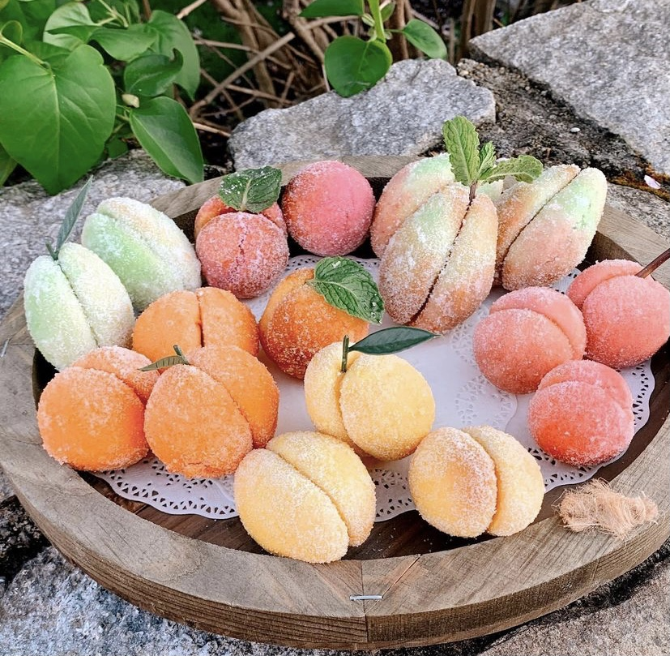
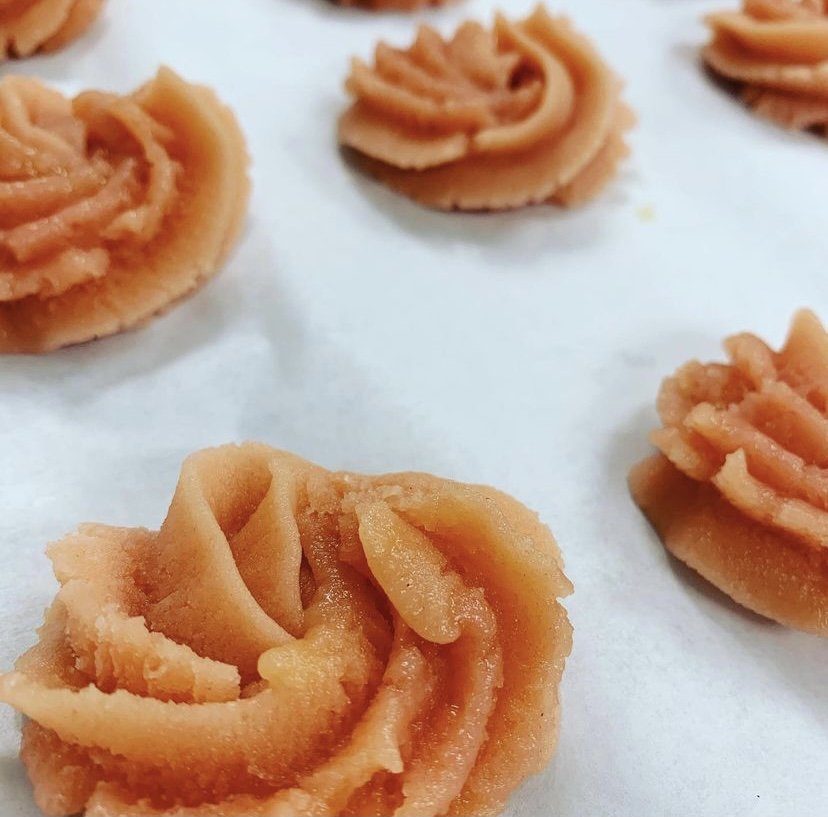
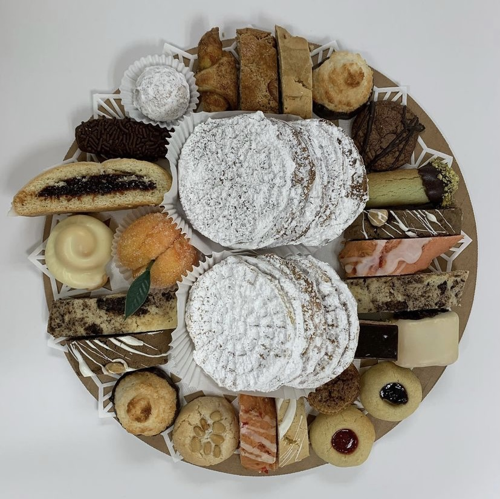
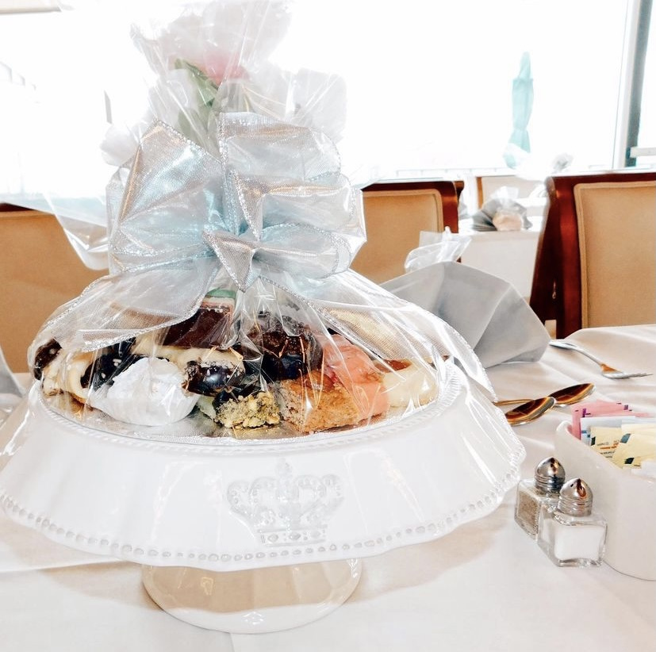
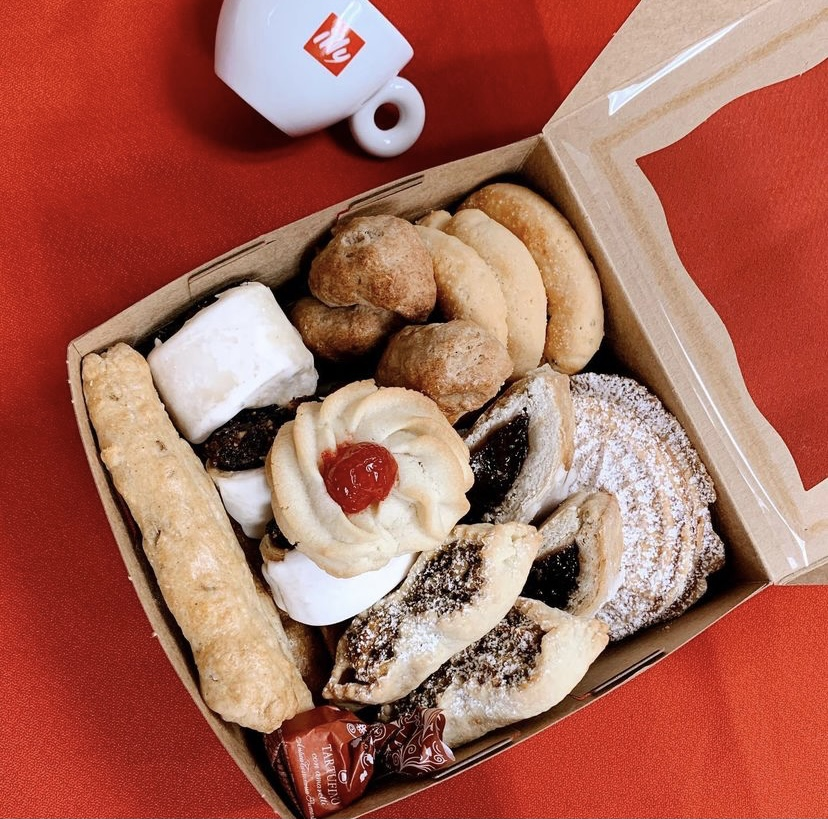

Our Products

We guarantee you will not find the variety that we offer anywhere else. Our traditional cookie trays contain over twenty-five different kinds of cookies and biscotti--all made from scratch from different doughs with their own special flavors.

We do NOT make one dough and shape it 25 different ways! There are about twenty-eight cookies per pound; we make them small so our guests can eat as many as they'd like. We recommend 1 1/2-pound trays for tables of 10 or more. Ask about our cookie favors, gift boxes, and individual servings! Our products are very customizable, and we are happy to work within your budget.
We guarantee you will not find the variety that we offer anywhere else. Our traditional cookie trays contain over twenty-five different kinds of cookies and biscotti--all made from scratch from different doughs with their own special flavors. We do NOT make one dough and shape it 25 different ways! There are about twenty-eight cookies per pound; we make them small so our guests can eat as many as they'd like. We recommend 1 1/2-pound trays for tables of 10 or more. Ask about our cookie favors, gift boxes, and individual servings! Our products are very customizable, and we are happy to work within your budget.
Cookies:

Almond biscotti "Quaresimali"
Traditionally made during the Lenten season, this old-school biscotti is made with brown sugar, cinnamon, and loads of almonds

Almond Crescents
I Fiori Sicilia", a citrus flavoring provides a unique flavor to this almond cookie which gets dipped in dark chocolate and topped with crushed almonds

Amaretti
This gluten-free treat is made with almond flour...crispy on the outside and chewy on the inside.

Anise toast
Double baked anise biscotti studded with candied fruit and topped with anise glaze.

Apricot Pecan Biscotti
This luscious biscotti is loaded with pecans and dried apricots, then topped with caramel glaze. A winning trio

Bocche di Dame
"Bocche di dame"--the lips of a lady! Our newest star, a gluten-free almond-based cookie surrounds an amarena cherry. Lemon icing & dark chocolate bring it over the top.

Bourbon Balls
So strong you'll have to designate a driver.

Butterballs
What's an Italian cookie tray without butterballs? We switch it up with walnuts or pecans. They melt in your mouth!
Cherry slices
One of our favorites...almond flavoring and glaze, chock full of cherries and walnuts.

Chocolate Hazelnut Biscotti
Loaded with hazelnuts, this spongy biscotti will be on everyone's favorite list! Topped with white chocolate.

Cranberry Pistachio Biscotti
Cranberries, pistachios, and a touch of anise topped with white chocolate.

Creme de Menthe Pistachio
Creme de menthe flavored butter cookie accented with dark chocolate and crushed pistachios.

Egg biscuits
The "Italian wedding cookie"...ours is light with lemon flavor and icings chosen to match your special event

Espresso Fudge
If you like chocolate with your coffee, you simply must try this one!

Fig "Cucidati"
No Italian cookie tray would be complete without this Sicilian favorite, loaded with figs, dates, golden raisins, rum and almonds then iced and decorated to match the colors of your special event. Delicioso!

Jelly Thumbprints
Jelly thumbprints are filled with raspberry, apricot, or blueberry filling.

Lemon Cardamom Biscotti
Hard to decide which is the star of this biscotti--pignoli, cardamom, or the burst of lemon! One of our favorites.

Linzer Hearts
Everybody's favorite! Sandwiched with raspberry jam.

Macaroons
We decorate our coconut macaroons two ways, with the traditional cherry topping and 'black-bottomed'--coated and drizzled with dark chocolate.

'Milano'
Butter cookies topped with dark chocolate. Simple yet perfect.

Molasses
Luscious molasses, cinnamon, cloves & brandy icing will warm you from the inside out.
Peach cookies "Pesce Dolci"
They taste as good as they look! Another traditional Italian favorite, this cookie has peach flavor, peach brandy, and peach jam with an almond for the 'pit'. Beautiful cookie for favors!
Peanut Butter Balls
These are the first to disappear on our cookie displays! A perfect marriage of dark chocolate and creamy peanut butter.

Pignoli
Another Italian favorite! Our pignoli are made with almond paste, creating a crispy shell and chewy center.
 Pistachio
Pistachio From northern Italy, this gluten-free cookie is crunchy on the outside, moist on the inside. 
Rose Spritz Cookies Who doesn't love a butter cookie?? We pipe these in vanilla, chocolate, and raspberry and sandwich them with marshmallow buttercream. Can't you just picture these at a garden party or bridal shower??

Prune slices
SO GOOD you'll want to order them again...and again! Prunes, maraschino cherries, orange marmalade and brandy come together to create the filling of this popular cookie.

Rugelach
A nod to our Jewish friends, we make our rugelach with a satiny cream cheese dough, brown sugar, walnuts, and raisins. L'chaim!

Sesame
Toasted sesame seeds and a touch of anise...perfect with your morning espresso.
Spumoni/Rainbow Cookies
This cookie was created by Italian Americans as a tribute to their beloved flag. We layer this traditional almond paste-based cookie with raspberry and apricot filling. THE BEST!

Triple Chocolate Logs
Rich, dark chocolate batter topped with more dark chocolate and jimmies. A chocoholic's dream!

Wandi
Wandi is an Italian American delicacy that has been made in our family for several generations. Stacked in a tray or layered in a bushel basket, it's the Italian version of a potato chip--you can't eat just one!
Pizzelle
Classic Italian cookies baked in a waffle iron. We make two kinds, anise, and chocolate raspberry. Great with ice cream or gelato! These can be added to your cookie or wandi tray or sold by the pound.
Cookie Packages

Wandi bushel
It is an Italian tradition for the bride and groom to pass out wandi from a bushel basket! I have different size bushel baskets; this one holds about 75 wandi.
$75
"Designer" Tray
1/2 pound of wandi surrounded by a pound of cookies. The best of both worlds! Makes a great centerpiece!
$150
Basic Cookie Tray $25
Deluxe Cookie Tray $30

Pizzelle $22.50
Cookie Charcuterie Box $35

Small Assorted Cookie Box $12.50
Wandi Tray $13.50
LOCAL ORDERS PLEASE CALL US!
401-450-9276
Since our products are baked to order, please call at least five days in advance. We do not have a storefront and cannot honor last-minute orders.
Thank you for your understanding!
Please call or email for custom orders.